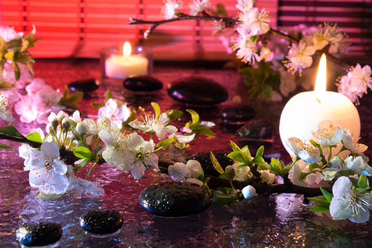

Cromoterapia é a prática pseudocientífica de utilizar a luz de diferentes cores no tratamento de doenças. Cromoterapeutas alegam que este método é capaz de equilibrar as "energias" do corpo humano, tratando doenças e trazendo bem-estar.
A cromoterapia, basicamente, é o uso das cores como meio terapêutico para o tratamento de condições físicas e emocionais. Antes, usava-se luz ambiente e a coloração das roupas, mas o avanço dos estudos sobre o tema permitiu que a terapia das cores fosse mais precisa. Agora, usa-se bastões de luz em pontos específicos do corpo, baseados na acupuntura, e banho de imersão, por exemplo.
Na cromoterapia, cada cor tem uma propriedade diferente que vai agir em pontos específicos para estimular uma reação curativa. Os pontos da acupuntura como base atingem canais energéticos espalhadas pelo corpo. "Sempre que essa energia está estagnada, ela gera doença".
Geralmente, mais de uma cor é utilizada para o tratamento. A escolha vai depender do problema da pessoa, sendo que cada ponto do corpo tem um protocolo diferente. Na terapia das cores, a cor laranja, por exemplo, é indicada para quem sofre de depressão, pois tem o poder de aumentar a autoestima e dar disposição. Para dores musculares, cores frias, como o azul, são mais indicadas devido às propriedades anti-inflamatórias.
A cromoterapia é um tipo de tratamento que apresenta os seguintes benefícios:
Além disso, a cromoterapia, muitas vezes, é utilizada como tratamento complementar pois melhora o funcionamento do coração e, consequentemente, melhora a circulação sanguínea.